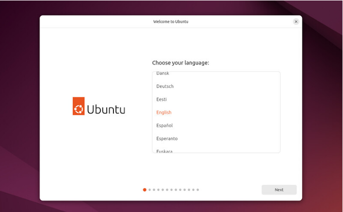
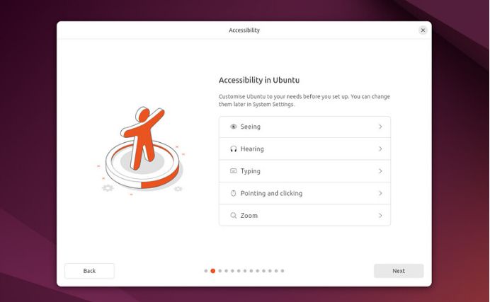
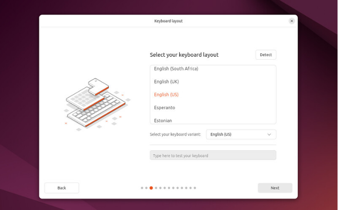
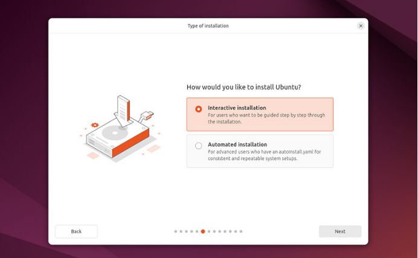
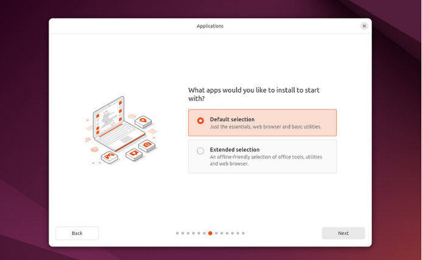
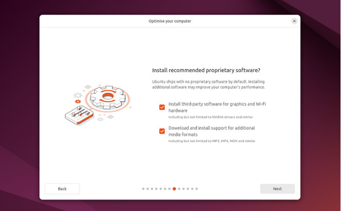

El instalador (1): idioma, teclado y opciones
Primeras pantallas del instalador: idioma, accesibilidad, teclado, red y qué programas llevar.
El instalador (1): idioma, teclado y opciones
🧭 El instalador, pantalla a pantalla
El instalador de Ubuntu es un asistente con botones Atrás y Siguiente y unos puntitos abajo que indican en qué paso vas. Verás cómo es de claro. En este módulo y el siguiente recorremos todas sus pantallas con capturas reales del tutorial oficial.
1. Elegir el idioma
Al iniciar el instalador te invita a elegir tu idioma. Escoge Español: es el idioma en el que se instalará el sistema (Ubuntu instala el idioma que elijas junto con el inglés, y luego puedes añadir más).

Captura realElige el idioma del sistema. Fuente: tutorial oficial de Canonical «Install Ubuntu Desktop» (ubuntu.com/tutorials) (6 de octubre de 2026). El aspecto puede cambiar con el tiempo.
2. Accesibilidad
A continuación se ofrece configurar ayudas de accesibilidad: visión, audición, escritura, uso del ratón y zoom. Puedes cambiarlas más tarde en Configuración, así que si no las necesitas, pulsa Siguiente.

Captura realAyudas de accesibilidad disponibles desde el principio. Fuente: tutorial oficial de Canonical «Install Ubuntu Desktop» (ubuntu.com/tutorials) (6 de octubre de 2026). El aspecto puede cambiar con el tiempo.
3. Distribución del teclado
Elige la distribución de teclado que corresponde al tuyo (en España, «Spanish»), y comprueba que las teclas coinciden escribiendo en el recuadro de prueba. Si dudas, puedes usar el botón Detectar.

Captura realElige el teclado y pruébalo antes de continuar. Fuente: tutorial oficial de Canonical «Install Ubuntu Desktop» (ubuntu.com/tutorials) (6 de octubre de 2026). El aspecto puede cambiar con el tiempo.
4. Conectar a internet
Después puedes conectarte a la red (wifi o cable). Es muy recomendable: así Ubuntu descarga actualizaciones y controladores de terceros (por ejemplo los de gráficas NVIDIA) durante la propia instalación. No es obligatorio: puede instalarse sin conexión.
5. Probar o instalar
Se te ofrece probar Ubuntu (sin instalar) o instalar Ubuntu. Para instalar, elige la segunda opción.
6. Instalación interactiva o automatizada
La opción habitual es la instalación interactiva: te va guiando paso a paso. La automatizada carga un archivo de configuración desde un servidor y sirve para instalar muchos equipos iguales (aulas, empresas). Tú usarás la interactiva.

Captura realElige «Interactive installation». Fuente: tutorial oficial de Canonical «Install Ubuntu Desktop» (ubuntu.com/tutorials) (6 de octubre de 2026). El aspecto puede cambiar con el tiempo.
7. ¿Qué programas quieres de partida?

Captura realSelección predeterminada o extendida. Fuente: tutorial oficial de Canonical «Install Ubuntu Desktop» (ubuntu.com/tutorials) (6 de octubre de 2026). El aspecto puede cambiar con el tiempo.
| Opción | Qué incluye |
|---|---|
| Selección predeterminada (Default) | Lo esencial: navegador web y utilidades básicas. Después amplías con la App Center. |
| Selección extendida (Extended) | Además, herramientas de oficina y utilidades pensadas para usar el equipo sin conexión. |
8. Software de terceros
La siguiente pantalla pregunta si quieres instalar software propietario: controladores para gráficas y wifi y soporte para formatos multimedia adicionales (MP3, MP4 y similares). Ubuntu no lo instala por defecto, pero se recomienda marcar las dos casillas para que todo funcione a la primera.

Captura realSe recomienda marcar ambas casillas. Fuente: tutorial oficial de Canonical «Install Ubuntu Desktop» (ubuntu.com/tutorials) (6 de octubre de 2026). El aspecto puede cambiar con el tiempo.
🧩 Instalación recomendada
En la pantalla del software de terceros, ¿qué se recomienda?
🧩 Interactiva o automatizada
Vas a instalar Ubuntu en un solo portátil, siguiendo cada paso. ¿Qué eliges?
🧩 Programas de partida
¿Qué ventaja tiene la selección extendida frente a la predeterminada?